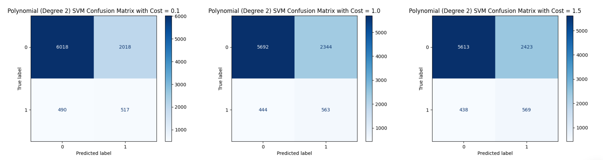

Support Vector Machines (SVMs) are powerful supervised learning models used for classification and regression tasks. They work by finding the best hyperplane that separates data points of different classes with the maximum margin, meaning the largest possible distance between the closest points (support vectors) of each class and the hyperplane. If the data isn’t linearly separable, SVMs can use something called a kernel trick to map the data into a higher-dimensional space where separation is possible. This makes SVMs very flexible and effective, even for complex datasets.
Why are SVMs linear separators?
SVMs are linear separators because, at their core, they try to find a straight line (in 2D), a flat plane (in 3D), or a hyperplane (in higher dimensions) that divides the data into classes. They look for the line or plane that not only separates the classes but does so with the widest possible gap between them. Even when data is more complex, SVMs still aim to find a linear separation, but possibly in a transformed higher-dimensional space (using a kernel), where the classes become linearly separable. So the idea of linear separation is always at the heart of how an SVM works.
How does the kernel trick work?
The kernel works by transforming the data into a higher-dimensional space without actually computing the new coordinates directly. Instead, it calculates the dot product between two points as if they were mapped to that higher space. This allows SVMs to find a linear separator in a new space even if the data looks messy and non-linear in the original space. Think of it like secretly stretching or twisting the data behind the scenes, so a simple straight line can separate it, all without having to do the heavy lifting of physically moving the data points.
SVM Kernel Trick Visualization
Why is the dot product so critical?
The dot product is critical because it measures the similarity between two points, and SVMs need that information to decide where the boundary (hyperplane) should go. Kernels are designed to compute this dot product in the transformed higher-dimensional space without ever having to map the data explicitly, saving tons of time and computation. Without the dot product trick, we'd have to actually move every point into a complicated higher-dimensional space and then calculate distances and separations, which would be way too slow and messy for real-world problems.
What do the polynomial and RBF kernel functions look like?
Polynomial Kernel
The polynomial kernel allows SVMs to create curved decision boundaries by taking the dot product between two points, adding a constant, and then raising the result to a power (degree d). This makes it possible for the model to capture interactions between features and recognize more complex patterns, like circles or spirals, instead of being limited to straight lines. By adjusting the degree, it controls how "bendy" the decision surface gets, making it flexible enough to handle moderately complicated datasets without making the model too wild.
$$ K(x, y) = (r + x^\top y)^d $$
where r is a constant (often 0 or 1), d is the degree of the polynomial, and x^\top y is the dot product of the two input vectors. It basically lets the SVM draw curved boundaries (like circles, ellipses) instead of straight lines.
RBF (Radial Basis Function) Kernel
The RBF kernel, also known as the Gaussian kernel, measures how close two points are and turns that into a similarity score. If two points are very close, their kernel value is near 1; if they’re far apart, the value drops close to 0. This ability to focus on local neighborhoods makes the RBF kernel extremely powerful for capturing complex, wiggly boundaries. It’s the most popular kernel because it can handle nearly any non-linear data pattern without needing to manually choose features or transformations.
where \( \gamma \) controls how tightly the influence of each data point spreads.
This kernel lets the SVM create wavy and very flexible decision boundaries by focusing on how close points are to each other.
Polynomial Kernel Mapping Example
Example: Suppose you have a 2D point: x = (x₁, x₂)
Let’s apply a polynomial kernel with r = 1 and d = 2.
The polynomial kernel is:
\[
K(x, y) = (1 + x^\top y)^2
\]
On expanding:
\[
1 + 2(x_1y_1 + x_2y_2) + (x_1y_1 + x_2y_2)^2
\]
If you manually expand further, you realize the kernel implicitly maps your data into a higher-dimensional feature space:
\[
\phi(x_1, x_2) = \left( 1, \sqrt{2}x_1, \sqrt{2}x_2, x_1^2, \sqrt{2}x_1x_2, x_2^2 \right)
\]
The transformation function maps a point from 2D to 6D, allowing the kernel dot product to match the value computed in original 2D space.
Real Point Example
Consider a real point, say (2, 3).
Plug into the transformation:
\[
\phi(2, 3) = \left( 1, \sqrt{2} \cdot 2, \sqrt{2} \cdot 3, 2^2, \sqrt{2} \cdot 2 \cdot 3, 3^2 \right)
= (1, 2.828, 4.242, 4, 8.485, 9)
\]
We started from a 2D point and used the polynomial kernel to map it into a 6D space. This lets SVMs find a linear boundary even when the original data isn’t linearly separable.
Support Vector Machine (SVM) requires labeled, numeric data for effective modeling. In supervised learning settings like this project, each input feature must be represented numerically so that the algorithm can compute distances, margins, and dot products between data points. Although categorical or qualitative features can be part of the original dataset, they must first be converted into a numeric format through techniques like label encoding or one-hot encoding. Additionally, SVM performance improves when continuous features are scaled, as the algorithm is sensitive to the relative magnitude of input values. Only after ensuring that all features are numeric and the dataset is labeled can SVM be successfully applied for classification or regression tasks.
Why SVMs Require Labeled Numeric Data?
SVMs can only work on labeled numeric data because the algorithm relies on calculating distances, margins, and dot products between data points to find the optimal separating hyperplane. These mathematical operations are only defined for numerical values, not for raw categorical or qualitative data. Labels are necessary because SVM is a supervised learning method, meaning it needs a known output (class) for each input during training to learn how to separate the classes. Without numeric representations and proper labels, SVM would not be able to measure similarity between points, draw margins, or build an accurate decision boundary.
For data preparation, the project began by analyzing each feature based on its type and relevance to the prediction task. Continuous variables such as age, balance, and campaign were retained due to their quantitative nature, while categorical features like job, marital status, education, default, housing, and loan were label encoded to convert them into a numeric format suitable for SVM modeling.
Columns such as contact, day_of_week, month, duration, pdays, previous, and poutcome were dropped to avoid introducing noise, redundancy, or data leakage into the model.
After selecting and encoding the appropriate features, continuous variables were standardized to ensure that all inputs were on a similar scale, which is critical for SVM performance. The cleaned and transformed data was then split into training and testing sets to allow for proper model evaluation and validation.
This structured approach ensures the SVM receives clean, relevant, and numerically formatted data for optimal learning and prediction.
To evaluate the SVM model fairly and prevent overfitting, the cleaned and preprocessed dataset was divided into a training set and a testing set. The training set was used to build and fit the model, while the testing set was reserved to assess the model's predictive performance on unseen data. A standard 80-20 split was applied, where 80% of the data was allocated for training and 20% for testing. The splitting was performed randomly but with a fixed random seed to ensure reproducibility. This method ensures that the model learns patterns from one portion of the data and is validated on a separate, unbiased portion, providing a reliable measure of its generalization ability.
Importance of Keeping Sets Disjoint
In supervised learning, it is essential that the training and testing sets remain completely disjoint, meaning they share no overlapping data points. Keeping the sets disjoint ensures that the model is evaluated on data it has never seen before, providing a true measure of its ability to generalize to new, unseen information. If any overlap existed between the training and testing sets, the model could artificially perform well by memorizing specific patterns rather than genuinely learning how to make predictions. Disjoint sets prevent data leakage, promote unbiased evaluation, and are a fundamental requirement for building reliable and trustworthy machine learning models.
Linear SVM is a classification technique that attempts to find the best straight-line (or hyperplane in higher dimensions) boundary that separates different classes in the data. It works by maximizing the margin, or distance, between the hyperplane and the nearest data points from each class, which helps the model generalize better to unseen data. Linear SVM is best suited for datasets where the classes are linearly separable or nearly separable without needing complex transformations. It is computationally efficient even for large datasets, but its performance can be limited when the data has complex, non-linear relationships that cannot be captured by a straight boundary.
To apply a Linear SVM, the first step is to ensure the dataset is fully numeric and labeled, as SVM requires numerical input for distance calculations. After preprocessing, the data should be split into a training set and a testing set to evaluate performance. A Linear SVM model can then be trained using the training data by specifying the kernel as "linear" and selecting an appropriate cost (C) value to balance margin maximization and classification errors. Once trained, the model can predict outcomes on the testing data, and its performance can be evaluated using metrics like accuracy and a confusion matrix to understand how well it separates the classes.
Polynomial SVM (Degree = 2)
A Polynomial SVM with degree 2 transforms the original input features into a higher-dimensional space where it becomes easier to separate classes using a curved, non-linear decision boundary. Instead of drawing a straight line like a linear SVM, a polynomial SVM captures relationships where the classes might be divided by curves, parabolas, or other second-degree patterns.
To apply it, the data must first be numeric and labeled, followed by a split into training and testing sets. A Polynomial SVM model can then be trained by specifying the kernel as "poly" and setting the degree parameter to 2. The cost (C) value should also be chosen to control the trade-off between maximizing the margin and minimizing classification errors. Once trained, the model's performance can be evaluated using accuracy and confusion matrix results to check how well the curved boundary separates the classes.
RBF SVM
An RBF (Radial Basis Function) SVM maps the input data into an infinite-dimensional space, allowing it to create highly flexible and complex decision boundaries that can capture even subtle patterns between classes. This kernel is especially useful when the data is not linearly separable or when the relationship between features and classes is highly non-linear.
To apply an RBF SVM, the data must first be numeric and labeled, and it should be split into a training set and a testing set. The SVM model is then trained by setting the kernel to "rbf" and selecting appropriate values for the cost (C) and gamma parameters. The cost controls the trade-off between margin size and classification error, while gamma controls the influence of individual training points. After training, the model's effectiveness is evaluated using metrics like accuracy and a confusion matrix to see how well it captures the complex structure of the data.
RESULTS
Linear SVM
At a lower cost of 0.1, the Linear SVM achieved a balanced trade-off between margin maximization and classification errors. The confusion matrix shows that 4614 "no" instances and 624 "yes" instances were correctly classified, while 3422 "no" instances and 383 "yes" instances were misclassified. Despite the lower penalty for misclassification, the results remain steady, indicating that the model's ability to separate the two classes was not heavily influenced by the cost change at this setting.
With a cost value of 1.0, the Linear SVM produced the exact same confusion matrix as with cost 0.1, correctly predicting 4614 "no" and 624 "yes" instances while misclassifying 3422 "no" and 383 "yes" cases. This suggests that, for this dataset, moderate increases in the penalty parameter do not significantly impact the model’s decision boundary. The model behavior remains consistent across this range, likely due to the complexity and overlap in the feature space.
Increasing the cost to 1.5 also resulted in no change to the confusion matrix compared to the lower cost values. The predictions remained identical, with 4614 correct "no" classifications, 3422 misclassified "no" cases, 624 correct "yes" classifications, and 383 misclassified "yes" cases. This stability across different cost values indicates that beyond a certain point, adjustments to the cost parameter alone are not sufficient to improve the model, and deeper changes such as feature engineering or model type adjustments may be needed. The accuracy remained same across all the three cases: 57.92%
Polynomial SVM (Degree = 2)

With a cost of 0.1, the Polynomial SVM achieved the highest accuracy among the three models, at 72.27%. The confusion matrix shows that 6018 "no" instances and 517 "yes" instances were correctly classified, while 2018 "no" instances and 490 "yes" instances were misclassified. The lower cost allowed for a more flexible margin, which helped the model correctly classify more overall instances but still led to a significant number of errors, particularly in distinguishing the minority class.
At a cost of 1.0, the Polynomial SVM produced a slightly lower accuracy of 69.17%. The model correctly predicted 5692 "no" instances and 563 "yes" instances, while misclassifying 2344 "no" instances and 444 "yes" instances. Increasing the cost slightly improved the correct classification of the minority class ("yes"), but overall, the model became slightly more rigid, leading to more errors in the majority class and a slight drop in overall accuracy compared to the lower cost setting.
With a cost of 1.5, the Polynomial SVM achieved an accuracy of 68.36%, the lowest among the three settings. It correctly classified 5613 "no" instances and 569 "yes" instances, while misclassifying 2423 "no" instances and 438 "yes" instances. Although the number of correctly classified "yes" instances improved marginally compared to cost 1.0, the overall tightening of the margin led to a decrease in total accuracy, suggesting diminishing returns from further increasing the cost parameter.
RBF SVM
With a cost of 0.1, the RBF Kernel SVM achieved an accuracy of 62.42%. The confusion matrix shows 5034 "no" instances and 611 "yes" instances were correctly classified, while 3002 "no" instances and 396 "yes" instances were misclassified. The low cost made the model more tolerant of errors, leading to a wider margin but also higher misclassification, especially in the majority "no" class, which contributed to the lower overall accuracy.
When the cost was increased to 1.0, the RBF SVM's accuracy improved to 66.75%. The model correctly classified 5458 "no" instances and 578 "yes" instances, while misclassifying 2578 "no" instances and 429 "yes" instances. A higher cost penalized misclassification more heavily, resulting in fewer errors compared to cost 0.1, but the model still struggled to perfectly separate the classes due to the overlap and complexity of the data.
At a cost of 1.5, the RBF SVM reached an accuracy of 67.74%, slightly higher than the previous two settings. It correctly classified 5555 "no" instances and 571 "yes" instances, while misclassifying 2481 "no" instances and 436 "yes" instances. The trend shows that increasing the cost led to marginal improvements in accuracy and slightly better balance in classification, but overall gains became smaller, indicating that cost adjustments alone could not fully overcome the challenges in the dataset.
Overall Comparison of Different SVM Variations
The plot of Accuracy vs Cost for the different SVM variations shows that the Polynomial Kernel SVM (degree = 2) consistently achieved the highest accuracy across all cost values, although its performance slightly decreased as the cost increased. The RBF Kernel SVM showed steady improvement in accuracy as the cost increased, indicating that it benefited from a tighter decision boundary. In contrast, the Linear SVM's accuracy remained constant and significantly lower than the other two models, suggesting that a linear boundary was insufficient for capturing the patterns in the dataset. Overall, the trends in the plot make sense based on the complexity of the data and the flexibility of each kernel.
Linear SVM Decision Boundary Visualizations Across Different Feature Pairs
1. Linear SVM Decision Boundary (age vs balance):
This plot shows the decision boundary created by a linear SVM using the features "age" and "balance". The boundary attempts to separate the two classes based on a combination of a client's age and average account balance. Although the classes overlap significantly, especially at lower balance values, the linear separator tries to distinguish regions where younger clients with lower balances behave differently compared to older clients with higher balances. This is expected in real-world financial data where client characteristics are mixed.
2. Linear SVM Decision Boundary (age vs campaign):
In this visualization, the linear SVM uses "age" and "campaign" (number of contacts during the campaign) as features. The decision boundary here is almost horizontal, indicating that the number of contacts (campaign) has a stronger impact on the classification than age. As the campaign count increases, the model tends to predict a different class, while age has a smaller separating effect. The clear horizontal division reflects the influence of campaign effort more than client demographic factors.
3. Linear SVM Decision Boundary (balance vs campaign):
This plot depicts the decision boundary between "balance" and "campaign" using a linear SVM. The boundary appears slightly tilted, suggesting that both balance and campaign efforts contribute to separation. Clients with very low balances and higher campaign counts are mostly grouped in one class, while higher balances slightly shift classification. However, because of significant overlap in client profiles, the linear SVM draws a straight separator that compromises between the two influences, highlighting the challenge of separating complex client behaviors linearly.
Comparison of Different SVM Kernels
In this project, three different SVM kernels, Linear, Polynomial (degree = 2), and RBF, were evaluated by modeling the client data across multiple cost (C) values. Each model's performance was assessed using confusion matrices, classification reports, and overall accuracy. The following summarizes the results:
Linear Kernel:
The Linear SVM achieved an accuracy of around 58%, and its performance remained largely unchanged across different cost values (C=0.1, 1.0, 1.5). The decision boundary created was a straight line, but due to the overlapping nature of the real-world data, the linear separator struggled to classify the points correctly. Linear SVM worked best when the data was linearly separable, but in this case, it underperformed.
Polynomial Kernel (degree=2):
The Polynomial SVM showed better results compared to the Linear SVM, with the highest accuracy around 72% at C=0.1. As the cost increased to 1.0 and 1.5, the accuracy slightly dropped but remained higher than Linear SVM. The polynomial kernel allowed the model to form curved decision boundaries, better capturing the complex relationships in the data and leading to improved classification performance.
RBF (Radial Basis Function) Kernel:
The RBF SVM had an accuracy of about 67–68% across the tested cost values. As the cost increased from 0.1 to 1.5, the accuracy improved slightly. The RBF kernel, being a powerful non-linear separator, helped in handling the overlapping regions better than the Linear SVM but slightly underperformed compared to the Polynomial kernel on this dataset. It captured non-linear patterns but was limited by the complexity and noise in the data.
CONCLUSION
The SVM models revealed that certain features, particularly account balance, age, and previous campaign outcomes, were strong indicators of whether a customer would subscribe to a term deposit. Customers who had a higher balance or had previously responded positively to campaigns were more likely to subscribe again. Demographic factors such as job type and education level also showed patterns of influence, with specific groups responding differently to marketing efforts. These findings highlight that both financial status and personal background are important in predicting customer behavior.
In comparing the different SVM kernels, the Polynomial SVM (degree=2) performed the best, suggesting that customer responses are influenced by more complex, non-linear relationships rather than simple straight-line separations. The RBF SVM also captured non-linear patterns well, while the Linear SVM struggled with the overlapping nature of the data. These results demonstrate that machine learning models, especially those capable of handling non-linear decision boundaries, offer clear improvements over simpler, traditional statistical methods in predicting customer subscription behavior.
Overall, the SVM findings support the idea that personalized and targeted marketing strategies, informed by key customer demographics and financial behaviors, can be more effective. The analysis shows that factors like the number of campaign contacts, previous interactions, and economic context such as loan status all play a role in customer decisions. Using flexible machine learning models like SVMs allows organizations to better understand and predict customer responses, ultimately leading to smarter, more efficient marketing campaigns.